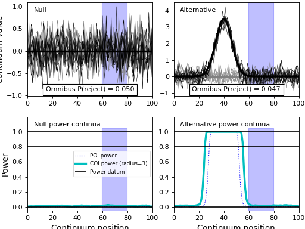

power1d.roi¶
Regions of interest (ROIs)
ROIs define the continuum scope of the null hypothesis.
Example:
import numpy as np
from matplotlib import pyplot
import power1d
# create data sample models:
J = 8
Q = 101
baseline = power1d.geom.Null( Q=Q )
signal0 = power1d.geom.Null( Q=Q )
signal1 = power1d.geom.GaussianPulse( Q=Q, q=40, fwhm=15, amp=3.5 )
noise = power1d.noise.Gaussian( J=J, Q=Q, mu=0, sigma=0.3 )
model0 = power1d.models.DataSample(baseline, signal0, noise, J=J)
model1 = power1d.models.DataSample(baseline, signal1, noise, J=J)
# assemble into experiment models:
emodel0 = power1d.models.Experiment( [model0, model0], fn=power1d.stats.t_2sample )
emodel1 = power1d.models.Experiment( [model0, model1], fn=power1d.stats.t_2sample )
# simulate the experiments
sim = power1d.models.ExperimentSimulator(emodel0, emodel1)
results = sim.simulate(iterations=1000, progress_bar=True)
# create ROI object and apply to the results:
Q = 101
x = np.array( [False] * Q )
x[60:80] = True
roi = power1d.roi.RegionOfInterest(x)
results.set_roi( roi )
# plot:
pyplot.close('all')
results.plot()
(Source code, png, hires.png, pdf)
{kind=link}
{kind=link}

Note
Since the ROI object limits the scope of the null hypothesis, power results pertain only to the continuum region(s) inside the ROI. In this example we see that the omnibus power is close to alpha because the ROI contains no signal. Simulating for a larger number of iterations will yield more precise convergence to alpha.
RegionOfInterest¶
-
power1d.roi.RegionOfInterest(x)¶ Region of interest (ROI).
Example:
import numpy as np from matplotlib import pyplot import power1d Q = 101 x = np.array( [False] * Q ) x[40:60] = True roi = power1d.roi.RegionOfInterest(x) pyplot.close('all') roi.plot()
(Source code, png, hires.png, pdf)
{kind=link}
{kind=link}